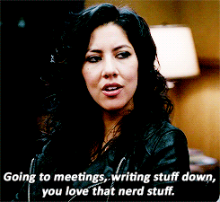
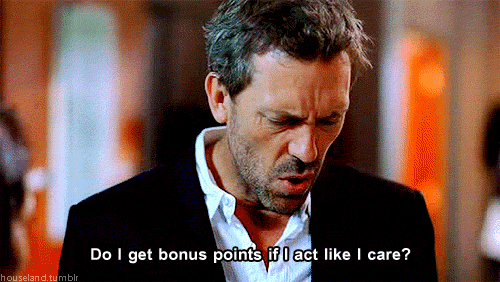

Communication page
Best practices for communicating with clients.
The fundamentals of proactive communication
The following best practices might seem basic, but surprisingly few people follow through with them. Simply performing “the basics” will make you stand out, ensure clarity and reduce risk of an expectation gap growing over time.
Successful meetings

Set an Agenda
Come into a meeting with an agenda. State the agenda at the start so everyone is aware of what you’d like to accomplish. This might include topics of discussion or key questions you’d like to answer.
Take notes
Simply take notes during calls and meetings. Summarize the “next actions” and make sure its clear who is assigned each action.
Send recaps
Simply send a summary of your notes and next steps out to all stakeholders or attendees. If you’re meeting alone with a client, send it to them.
Take ownership
When appropriate, make it clear that you will complete certain tasks by a certain date.
Ask questions
Don’t be embarrassed if you don’t understand something. Strive to never leave an interaction without fully understanding what was discussed or how something will work. If you’re unsure, ask to restate a summary of your understanding back and ask for confirmation. Ironically, you never actually sound “dumb” when you ask for clarification or say you don’t understand something, you come off as brave and intelligent.
State expectations explicitly
Often, a project or discussion will end without clear roles, responsibilities, or tasks. When that happens, it’s up to you to add structure to these fuzzy edges. Create a suggested plan and state which parts you will take ownership of. Or if more discussion or direction is needed, ask for that.
Just care

As dumb as it sounds, I’ve found that one of the key differences between great consultants and average ones is caring - really caring about making the project successful through any means necessary. Most people just go through the motions. If you care a lot, and you’re not ashamed to show it, people will notice. Other people who also care will be attracted to you and respect you, and doors will tend to open as a result.
Good business writing
The best business writing puts the onus on the writer instead of the reader. Think hard about your audience, what they know, what they need to know, their time constraints, etc, and make it as easy on them as physically possible. If you follow this principal, you’ll be a very effective communicator.
More often than not, people do the opposite. They write quickly, lazily, and from their perspective, leaving the reader to piece together puzzle pieces before they can understand the context and content of their message. Most people will give up and opt out rather than jump through these hoops, so make it easy on them.
Optimize for a short attention span
Everyone has a short attention span, so get to the point.
The number one mistake I see in business writing (usually emails), is attempting to be thorough and complete instead of concise.
Ironically, your message has its best chance of actually working if you can boil it down to its essence and avoid writing long essays that no one will end up reading.
Don’t bury the lede

Journalists usually write their articles (at least in newspapers) in order of priority. They assumed people would read the first paragraph, or maybe the first two or three paragraphs, far more often than the entire article. Therefore, they put the most important summary in the first paragraph, then the second most important point in the second paragraph, etc. This is called “not burying the lede.”
The lede is the summary or the essence of your argument. If you “bury” it under mountains of text, it’s unlikely many people will be able to dig it out.
Use whitespace
Whitespace is pleasing to the eye and encourages further reading. By contrast, long blocks of text are intimidating and leads to abandonment - whether an article, email, marketing copy, or any form of writing. I’m sure there’s a UX study somewhere to prove this, but until we find it, just take my word for it.
- Use
- Lists
And short paragraphs. With short sentences.
- Bullet lists
- Work well
- Too
Break up your writing with headings
Use bold and highlights to emphasize the most important parts of your message.
Exec summaries and calls to action

In many cases the details are important and can’t be condensed to the brevity you might strive for. In these cases, consider 3 sections to your email:
- The executive summary - one sentence that summarizes the problem
- The details - A longer passage explaining the details
- The recommendation - We’re consultants, so usually it’s appropriate to offer a suggested course of action, even if the ultimate decision is not ours to make
Exercise: Meeting
You recently attended a meeting where you were asked to discuss a new feature on your project. You started on the work, but today at standup you learned another developer is working on the same feature. Furthermore, your project manager is asking you to attend another meeting today to discuss a different new feature.
What can you do to make this meeting effective and to avoid this duplicate effort in the future?
Answer
Send out an an agenda in advance of the meeting. Also, explain what happened with the confusion around the previous feature, and that you'd like to agree who will work on this feature at the meeting. During the meeting, ask clarifying questions about the new feature and who is expected to implement it. Offer to take ownership of the feature if appropriate. Take notes about all of this. After the meeting, send out a recap of what was discussed to all of those who attended, making it clear who will be implementing the feature.
Principles used:
- Come prepared (setting an agenda will make the meeting more focussed)
- State expectations explicitly (explaining the confusion from before will help clarify the expectation you want to identify an explicit owner)
- Take notes and send recaps (there's no question of who will be implementing the feature this time)
- Take ownership (your initiative creates less confusion)
- State expectations explicitly (everyone knows that you own this feature)
- Just care (having a clear purpose to the meeting and taking ownership show your dedication to the project)
Exercise: Email 1
Consider the following email:
Hey everyone,
I wanted to make sure we are all on the same page for the navigation projects being delivered. It was recently brought to my attention that the delivery dates for navigation are as follows:
- Rates & Fees: ~June 27th
- Report Overview: ~July 2nd
It is my understanding that this is a polished UI experience with service integration, prepared for the next phase of testing. The team working on Report Overview is slated to meet their deadline, from the UI perspective and has already met many times with the business analysts to iron out specific details and behaviors. However, I am concerned that Rates & Fees will miss the June 27th deadline. Dedicated development started on Rates & Fees on June 2nd, with UI development starting June 9th. Dedicated development refers to team resources working full time on this project, not including Srini and I’s proof of concept.
Starting development this late, does not give the required time for UI testing and verifying the business requirements in order to deliver a solid application. I had hoped that a missed deadline would not occur while I was assisting in development, but I must stress the importance on starting early. The delay in starting Rates & Fees has led us to this point. Note, I will continue to assist Sanjay in developing the UI for Rates & Fees, but would like to open a discussion on what steps we need to take to get this project back on track.
What do you think the biggest problems are with it?
Once you’ve identified those problems, try to rewrite it to solve those problems.
Answer
Hey everyone,
I am concerned that Rates & Fees will miss the June 27th deadline. Let's discuss how we can address this concern at today's standup.
This is mainly due to the fact that full time dev didn't begin until June 2nd, which doesn't give us enough time for QA and verification. Unfortunately, I only learned about this deadline very recently, or I would have notified you sooner.
Principles used:
- Optimize for a short attention span (condensed from 5 paragraphs to 2)
- Don’t bury the lede (the point of the email is stated first)
- Use whitespace (separating the first sentence from the rest makes the point clearer)
- Use bold to emphasize the most important parts of your message (need to discuss this ASAP, so highlight the call to action)
- Exec summaries and calls to action (it's clear what the next step is)
Exercise: Email 2
Improve the following email:
Hi Ravi,
I felt that David wasn't being very articulate as to why he needed access to Google Analytics so I gave him a call. I didn't think he was being clear so I wanted to clarify with him before we made any decisions At first I didn't quite understand his reasoning but after my phone call with him I changed my mind. I think it would be a good idea to give our designer access to Google Analytics. I think David would be more receptive to me and we could better communicate on issues and how to solve them.
Answer
Hi Ravi,
I think we should give David access to Google Analytics. I think it would be a good idea for 2 reasons:
- He would be more receptive if he could see how his work was affecting the site (such as testing out the conversion rate of design changes to the contact form, etc).
- We could work better and at a faster pace when solving issues (For example, for the month of June, 87 people came to the Contact Us page but only about 13 people filled out a form. If David had firsthand access to this information, we could work together to debug that issue quicker).
Do you agree?
Principles used:
- Don’t bury the lede (the point of the email is stated first)
- Use lists (the reasons are easier to see)
- Exec summaries and calls to action (the email is easy to follow)
Exercise: Organizing
Consider the following thoughts. Find a way to organize this into relevant categories, and highlight the most important parts.
- Major homepage dev is complete and on time. Play with the demo here
- Minor bugs remain, listed here
- The QA team will start working on this page today
- We still don't have a full QA server or timeline. If we don't have it by end of week, we'll be a week behind on our timeline. Who will own this?
- We can't test the logged in views of the homepage without a QA server.
- Even though the homepage and locator will be done and ready to deploy before the production servers are available, we decided we'll still deploy Club Locator first (maybe by only a few days) to minimize risk on a lower visibility page.
- This means we'll be maintaining separate code branches for the locator release and the Locator+Homepage release. This is why we'll have Homepage on one server - http://samsminor.herokuapp.com - and locator on another - http://samsminor.herokuapp.com
Answer
Blockers
- We still don't have a full QA server or timeline. If we don't have it by end of week, we'll be a week behind on our timeline. Who will own this?
- We can't test the logged in views of the homepage without a QA server.
Status
- Major homepage dev is complete and on time. Play with the demo here.
- Minor bugs remain, listed here
- The QA team will start working on this page today
Discussion
- Even though the homepage and locator will be done and ready to deploy before the production servers are available, we decided we'll still deploy Club Locator first (maybe by only a few days) to minimize risk on a lower visibility page.
- This means we'll be maintaining separate code branches for the locator release and the Locator+Homepage release. This is why we'll have Homepage on one server - http://samsminor.herokuapp.com - and locator on another - http://samsclub.herokuapp.com
Principles used:
- Use bullets (thoughts are organized by topic)
- Use bold to emphasize the most important parts of your message (the most important piece is highlighted)